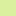

<!doctype html>
<html lang="en">
    <head>
        <meta charset="utf-8">
        <meta http-equiv="X-UA-Compatible" content="IE=edge">
        <meta name="viewport" content="initial-scale=1,user-scalable=no,maximum-scale=1,width=device-width">
        <meta name="mobile-web-app-capable" content="yes">
        <meta name="apple-mobile-web-app-capable" content="yes">
        <link rel="stylesheet" href="css/leaflet.css">
        <link rel="stylesheet" href="css/L.Control.Layers.Tree.css">
        <link rel="stylesheet" href="css/qgis2web.css">
        <link rel="stylesheet" href="css/fontawesome-all.min.css">
        <style>
        html, body, #map {
            width: 100%;
            height: 100%;
            padding: 0;
            margin: 0;
        }
        </style>
        <title>TOP 5 WISATA GUNUNG DI KEBUMEN!</title>
    </head>
    <body>
        <div id="map">
        </div>
        <script src="js/qgis2web_expressions.js"></script>
        <script src="js/leaflet.js"></script>
        <script src="js/L.Control.Layers.Tree.min.js"></script>
        <script src="js/leaflet-svg-shape-markers.min.js"></script>
        <script src="js/leaflet.rotatedMarker.js"></script>
        <script src="js/leaflet.pattern.js"></script>
        <script src="js/leaflet-hash.js"></script>
        <script src="js/Autolinker.min.js"></script>
        <script src="js/rbush.min.js"></script>
        <script src="js/labelgun.min.js"></script>
        <script src="js/labels.js"></script>
        <script src="data/SKLMorfologi_1.js"></script>
        <script src="data/BatasDesa_2.js"></script>
        <script src="data/BatasKecamatan_3.js"></script>
        <script src="data/Gunung_4.js"></script>
        <script>
        var map = L.map('map', {
            zoomControl:false, maxZoom:28, minZoom:1
        }).fitBounds([[-7.868395642029099,109.3179574398473],[-7.461481939297583,109.88081765350199]]);
        var hash = new L.Hash(map);
        map.attributionControl.setPrefix('<a href="https://github.com/tomchadwin/qgis2web" target="_blank">qgis2web</a> &middot; <a href="https://leafletjs.com" title="A JS library for interactive maps">Leaflet</a> &middot; <a href="https://qgis.org">QGIS</a>');
        var autolinker = new Autolinker({truncate: {length: 30, location: 'smart'}});
        // remove popup's row if "visible-with-data"
        function removeEmptyRowsFromPopupContent(content, feature) {
         var tempDiv = document.createElement('div');
         tempDiv.innerHTML = content;
         var rows = tempDiv.querySelectorAll('tr');
         for (var i = 0; i < rows.length; i++) {
             var td = rows[i].querySelector('td.visible-with-data');
             var key = td ? td.id : '';
             if (td && td.classList.contains('visible-with-data') && feature.properties[key] == null) {
                 rows[i].parentNode.removeChild(rows[i]);
             }
         }
         return tempDiv.innerHTML;
        }
        // add class to format popup if it contains media
		function addClassToPopupIfMedia(content, popup) {
			var tempDiv = document.createElement('div');
			tempDiv.innerHTML = content;
			if (tempDiv.querySelector('td img')) {
				popup._contentNode.classList.add('media');
					// Delay to force the redraw
					setTimeout(function() {
						popup.update();
					}, 10);
			} else {
				popup._contentNode.classList.remove('media');
			}
		}
        var title = new L.Control({'position':'topright'});
        title.onAdd = function (map) {
            this._div = L.DomUtil.create('div', 'info');
            this.update();
            return this._div;
        };
        title.update = function () {
            this._div.innerHTML = '<h2>TOP 5 WISATA GUNUNG DI KEBUMEN!</h2>';
        };
        title.addTo(map);
        var zoomControl = L.control.zoom({
            position: 'topleft'
        }).addTo(map);
        var bounds_group = new L.featureGroup([]);
        function setBounds() {
        }
        map.createPane('pane_OpenStreetMap_0');
        map.getPane('pane_OpenStreetMap_0').style.zIndex = 400;
        var layer_OpenStreetMap_0 = L.tileLayer('https://tile.openstreetmap.org/{z}/{x}/{y}.png', {
            pane: 'pane_OpenStreetMap_0',
            opacity: 1.0,
            attribution: '',
            minZoom: 1,
            maxZoom: 28,
            minNativeZoom: 0,
            maxNativeZoom: 19
        });
        layer_OpenStreetMap_0;
        map.addLayer(layer_OpenStreetMap_0);
        function pop_SKLMorfologi_1(feature, layer) {
            var popupContent = '<table>\
                </table>';
            var content = removeEmptyRowsFromPopupContent(popupContent, feature);
			layer.on('popupopen', function(e) {
				addClassToPopupIfMedia(content, e.popup);
			});
			layer.bindPopup(content, { maxHeight: 400 });
        }

        function style_SKLMorfologi_1_0(feature) {
            switch(String(feature.properties['Kemampuan_'])) {
                default:
                    return {
                pane: 'pane_SKLMorfologi_1',
                stroke: false, 
                fill: true,
                fillOpacity: 1,
                fillColor: 'rgba(215,25,28,1.0)',
                interactive: true,
            }
                    break;
                case 'Kemampuan Lahan dari Morfologi Tinggi':
                    return {
                pane: 'pane_SKLMorfologi_1',
                stroke: false, 
                fill: true,
                fillOpacity: 1,
                fillColor: 'rgba(245,144,83,1.0)',
                interactive: true,
            }
                    break;
                case 'Kemampuan Lahan dari Morfologi Cukup':
                    return {
                pane: 'pane_SKLMorfologi_1',
                stroke: false, 
                fill: true,
                fillOpacity: 1,
                fillColor: 'rgba(254,223,154,1.0)',
                interactive: true,
            }
                    break;
                case 'Kemampuan Lahan dari Morfologi Kurang':
                    return {
                pane: 'pane_SKLMorfologi_1',
                stroke: false, 
                fill: true,
                fillOpacity: 1,
                fillColor: 'rgba(219,240,158,1.0)',
                interactive: true,
            }
                    break;
                case 'Kemampuan Lahan dari Morfologi Sedang':
                    return {
                pane: 'pane_SKLMorfologi_1',
                stroke: false, 
                fill: true,
                fillOpacity: 1,
                fillColor: 'rgba(138,204,98,1.0)',
                interactive: true,
            }
                    break;
                case 'Kemampuan Lahan dari Morfologi Rendah':
                    return {
                pane: 'pane_SKLMorfologi_1',
                stroke: false, 
                fill: true,
                fillOpacity: 1,
                fillColor: 'rgba(26,150,65,1.0)',
                interactive: true,
            }
                    break;
            }
        }
        map.createPane('pane_SKLMorfologi_1');
        map.getPane('pane_SKLMorfologi_1').style.zIndex = 401;
        map.getPane('pane_SKLMorfologi_1').style['mix-blend-mode'] = 'normal';
        var layer_SKLMorfologi_1 = new L.geoJson(json_SKLMorfologi_1, {
            attribution: '',
            interactive: true,
            dataVar: 'json_SKLMorfologi_1',
            layerName: 'layer_SKLMorfologi_1',
            pane: 'pane_SKLMorfologi_1',
            onEachFeature: pop_SKLMorfologi_1,
            style: style_SKLMorfologi_1_0,
        });
        bounds_group.addLayer(layer_SKLMorfologi_1);
        map.addLayer(layer_SKLMorfologi_1);
        function pop_BatasDesa_2(feature, layer) {
            var popupContent = '<table>\
                    <tr>\
                        <th scope="row">Desa</th>\
                        <td>' + (feature.properties['Desa'] !== null ? autolinker.link(feature.properties['Desa'].toLocaleString()) : '') + '</td>\
                    </tr>\
                    <tr>\
                        <th scope="row">Kecamatan</th>\
                        <td>' + (feature.properties['Kecamatan'] !== null ? autolinker.link(feature.properties['Kecamatan'].toLocaleString()) : '') + '</td>\
                    </tr>\
                </table>';
            var content = removeEmptyRowsFromPopupContent(popupContent, feature);
			layer.on('popupopen', function(e) {
				addClassToPopupIfMedia(content, e.popup);
			});
			layer.bindPopup(content, { maxHeight: 400 });
        }

        function style_BatasDesa_2_0() {
            return {
                pane: 'pane_BatasDesa_2',
                opacity: 1,
                color: 'rgba(35,35,35,0.43137254901960786)',
                dashArray: '',
                lineCap: 'butt',
                lineJoin: 'miter',
                weight: 1.0, 
                fill: true,
                fillOpacity: 1,
                fillColor: 'rgba(225,89,137,0.0)',
                interactive: true,
            }
        }
        map.createPane('pane_BatasDesa_2');
        map.getPane('pane_BatasDesa_2').style.zIndex = 402;
        map.getPane('pane_BatasDesa_2').style['mix-blend-mode'] = 'normal';
        var layer_BatasDesa_2 = new L.geoJson(json_BatasDesa_2, {
            attribution: '',
            interactive: true,
            dataVar: 'json_BatasDesa_2',
            layerName: 'layer_BatasDesa_2',
            pane: 'pane_BatasDesa_2',
            onEachFeature: pop_BatasDesa_2,
            style: style_BatasDesa_2_0,
        });
        bounds_group.addLayer(layer_BatasDesa_2);
        map.addLayer(layer_BatasDesa_2);
        function pop_BatasKecamatan_3(feature, layer) {
            var popupContent = '<table>\
                </table>';
            var content = removeEmptyRowsFromPopupContent(popupContent, feature);
			layer.on('popupopen', function(e) {
				addClassToPopupIfMedia(content, e.popup);
			});
			layer.bindPopup(content, { maxHeight: 400 });
        }

        function style_BatasKecamatan_3_0() {
            return {
                pane: 'pane_BatasKecamatan_3',
                opacity: 1,
                color: 'rgba(35,35,35,1.0)',
                dashArray: '',
                lineCap: 'butt',
                lineJoin: 'miter',
                weight: 1, 
                fill: true,
                fillOpacity: 1,
                fillColor: 'rgba(231,113,72,0.0)',
                interactive: false,
            }
        }
        map.createPane('pane_BatasKecamatan_3');
        map.getPane('pane_BatasKecamatan_3').style.zIndex = 403;
        map.getPane('pane_BatasKecamatan_3').style['mix-blend-mode'] = 'normal';
        var layer_BatasKecamatan_3 = new L.geoJson(json_BatasKecamatan_3, {
            attribution: '',
            interactive: false,
            dataVar: 'json_BatasKecamatan_3',
            layerName: 'layer_BatasKecamatan_3',
            pane: 'pane_BatasKecamatan_3',
            onEachFeature: pop_BatasKecamatan_3,
            style: style_BatasKecamatan_3_0,
        });
        bounds_group.addLayer(layer_BatasKecamatan_3);
        map.addLayer(layer_BatasKecamatan_3);
        function pop_Gunung_4(feature, layer) {
            var popupContent = '<table>\
                    <tr>\
                        <td colspan="2">' + (feature.properties['Gunung'] !== null ? autolinker.link(feature.properties['Gunung'].toLocaleString()) : '') + '</td>\
                    </tr>\
                    <tr>\
                        <td colspan="2">' + (feature.properties['WADMKC'] !== null ? autolinker.link(feature.properties['WADMKC'].toLocaleString()) : '') + '</td>\
                    </tr>\
                    <tr>\
                        <td colspan="2">' + (feature.properties['Foto'] !== null ? '' : '') + '</td>\
                    </tr>\
                </table>';
            var content = removeEmptyRowsFromPopupContent(popupContent, feature);
			layer.on('popupopen', function(e) {
				addClassToPopupIfMedia(content, e.popup);
			});
			layer.bindPopup(content, { maxHeight: 400 });
        }

        function style_Gunung_4_0() {
            return {
                pane: 'pane_Gunung_4',
                shape: 'triangle',
                radius: 6.0,
                opacity: 1,
                color: 'rgba(0,0,0,1.0)',
                dashArray: '',
                lineCap: 'butt',
                lineJoin: 'miter',
                weight: 2.0,
                fill: true,
                fillOpacity: 1,
                fillColor: 'rgba(242,205,20,1.0)',
                interactive: true,
            }
        }
        map.createPane('pane_Gunung_4');
        map.getPane('pane_Gunung_4').style.zIndex = 404;
        map.getPane('pane_Gunung_4').style['mix-blend-mode'] = 'normal';
        var layer_Gunung_4 = new L.geoJson(json_Gunung_4, {
            attribution: '',
            interactive: true,
            dataVar: 'json_Gunung_4',
            layerName: 'layer_Gunung_4',
            pane: 'pane_Gunung_4',
            onEachFeature: pop_Gunung_4,
            pointToLayer: function (feature, latlng) {
                var context = {
                    feature: feature,
                    variables: {}
                };
                return L.shapeMarker(latlng, style_Gunung_4_0(feature));
            },
        });
        bounds_group.addLayer(layer_Gunung_4);
        map.addLayer(layer_Gunung_4);
        var baseMaps = {};
        var overlaysTree = [
            {label: ' Gunung', layer: layer_Gunung_4},
            {label: ' Batas Kecamatan', layer: layer_BatasKecamatan_3},
            {label: ' Batas Desa', layer: layer_BatasDesa_2},
            {label: 'SKL Morfologi<br /><table><tr><td style="text-align: center;"></td><td></td></tr><tr><td style="text-align: center;"></td><td>Kemampuan Lahan dari Morfologi Tinggi</td></tr><tr><td style="text-align: center;"></td><td>Kemampuan Lahan dari Morfologi Cukup</td></tr><tr><td style="text-align: center;"></td><td>Kemampuan Lahan dari Morfologi Kurang</td></tr><tr><td style="text-align: center;"></td><td>Kemampuan Lahan dari Morfologi Sedang</td></tr><tr><td style="text-align: center;"></td><td>Kemampuan Lahan dari Morfologi Rendah</td></tr></table>', layer: layer_SKLMorfologi_1},
            {label: "OpenStreetMap", layer: layer_OpenStreetMap_0},]
        var lay = L.control.layers.tree(null, overlaysTree,{
            //namedToggle: true,
            //selectorBack: false,
            //closedSymbol: '&#8862; &#x1f5c0;',
            //openedSymbol: '&#8863; &#x1f5c1;',
            //collapseAll: 'Collapse all',
            //expandAll: 'Expand all',
            collapsed: true,
        });
        lay.addTo(map);
        setBounds();
        </script>
    </body>
</html>
